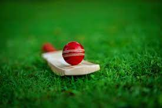

CRICKET
cricket, England national summer sport, which is now played throughout the world,
particularly in Australia, India, Pakistan, the West Indies, and the British Isles.
Cricket is played with a bat and ball and involves two competing sides (teams) of
11 players. The field is oval with a rectangular area in the middle, known as the
pitch, that is 22 yards (20.12 metres) by 10 feet (3.04 metres) wide. Two sets of
three sticks, called wickets, are set in the ground at each end of the pitch.
Across the top of each wicket lie horizontal pieces called bails
Rules
Basic rules for cricket

Cricket is played between two teams each made up of eleven players. (Sometime in junior competitions you will find 8 player teams).
Games comprise of at least one innings where each team will take turns in batting and fielding/bowling.
The fielding team will have a bowler bowl the ball to the batsman who tries to hit the ball with their bat.
The fielding team tries to get the batsmen out by…
Hitting the wickets with the ball when bowling
Catching a batsmans shot on the full
Hitting the batsmans leg in front of the wicket (LBW)
Or hitting the wickets before the batsmen can run to the other end of the pitch